Knight Training
The battle between the four factions.
What it is
- Players fight in four teams: the East Faction, West Faction, South Faction and North Faction.
- Each faction scores points during the battle. The factions are ranked 1st to 4th at the end.
- There is no death penalty. Your equipment loses no durability.
- Some Knight Trainings have a maximum level.
How to join a battle
-
Go to the Arena in Downtown.
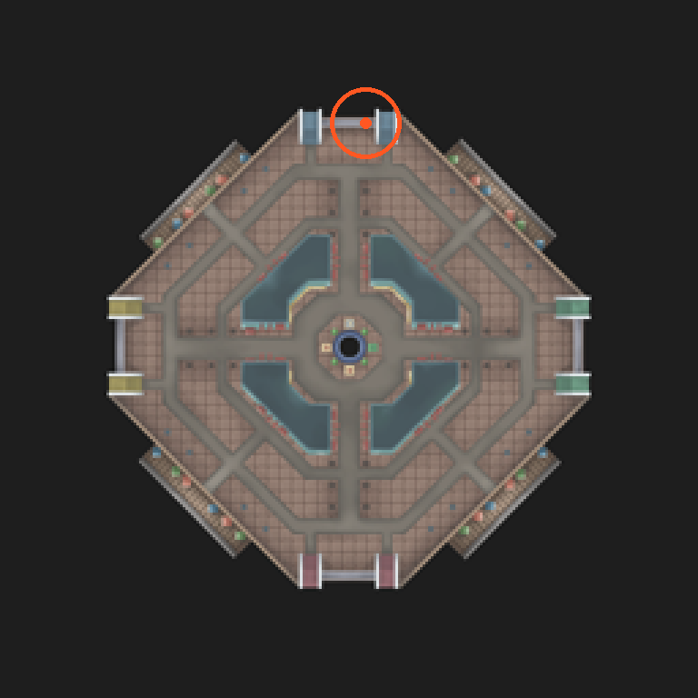
Downtown — Arena -
During registration, talk to the Owner and choose Knight Training. Outside registration he turns you away.
- You don't need to have joined a faction. The side you fight for in a battle doesn't have to be your own faction.
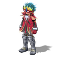
Owner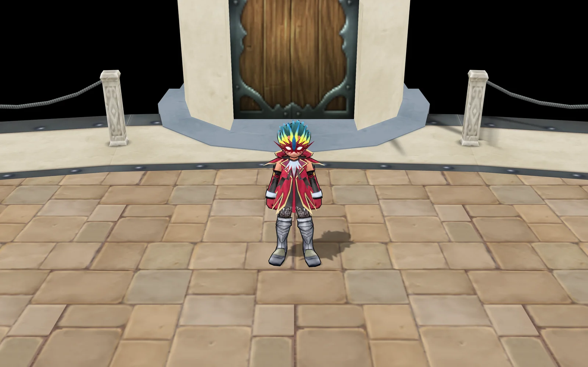
-
When the battle starts, everyone in the lobbies is sent to the battlefield.
Going back after you die
Return to your save point and you come back to your side's lobby. Wait 3 minutes, then talk to the receptionist to go back to the battlefield.
-
East Faction Lobby: Knight Training Receptionist
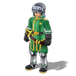
Knight Training Receptionist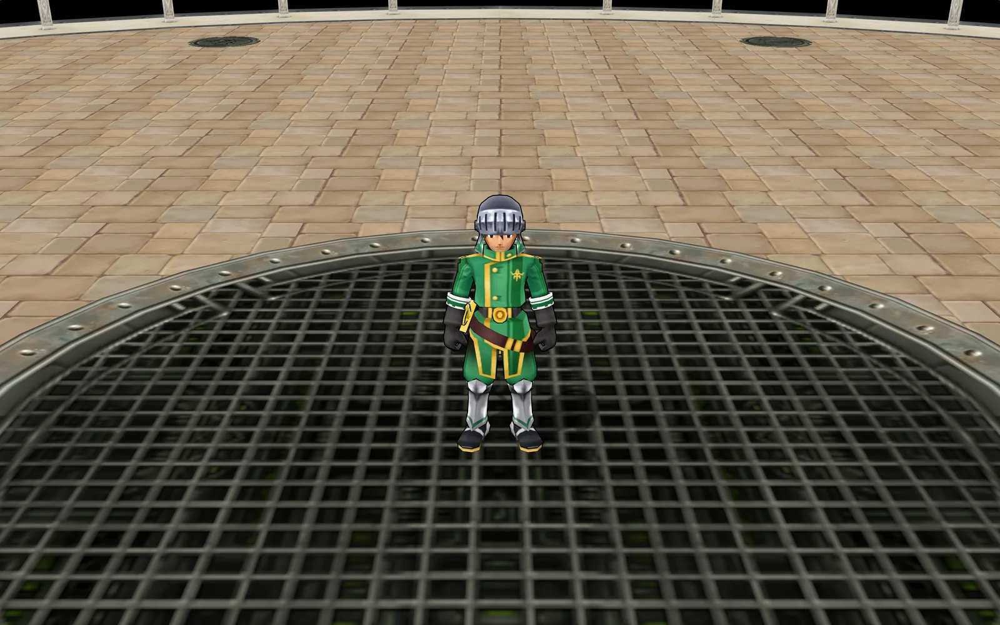
-
West Faction Lobby: Knight Training Receptionist
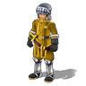
Knight Training Receptionist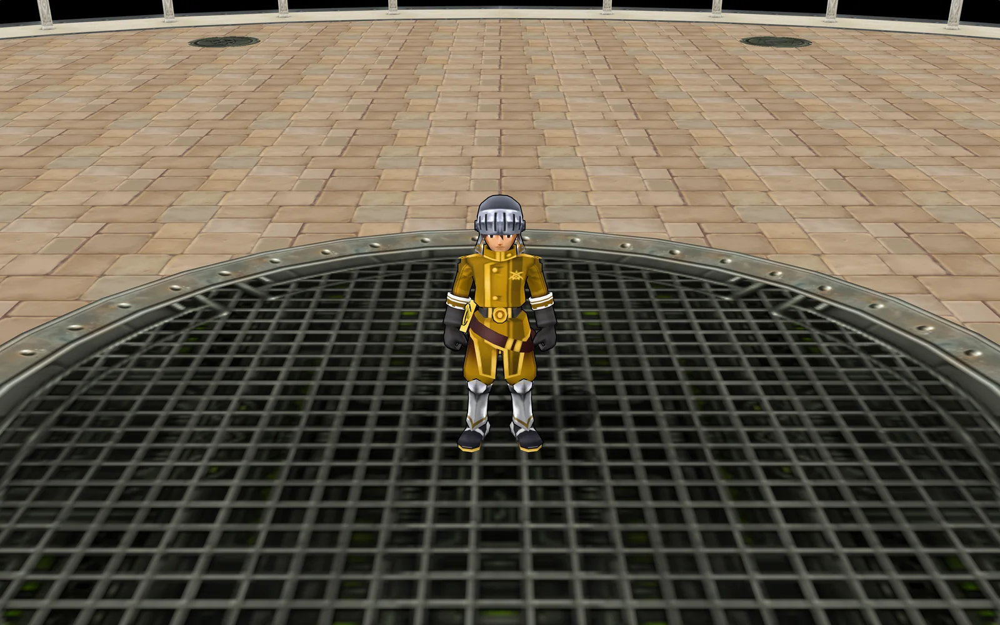
-
South Faction Lobby: Knight Training Receptionist
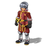
Knight Training Receptionist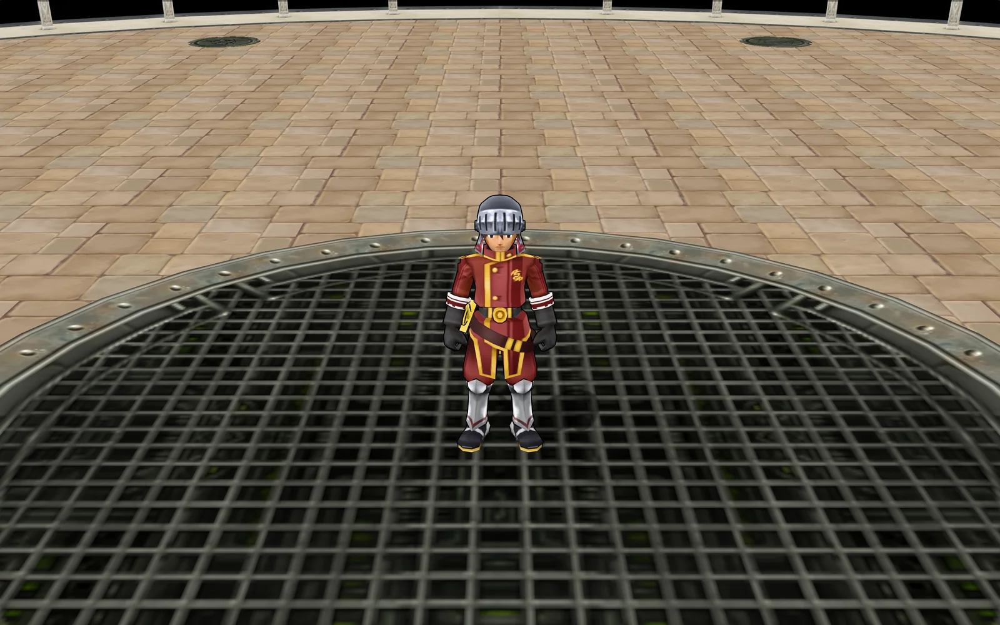
-
North Faction Lobby: Knight Training Receptionist
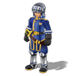
Knight Training Receptionist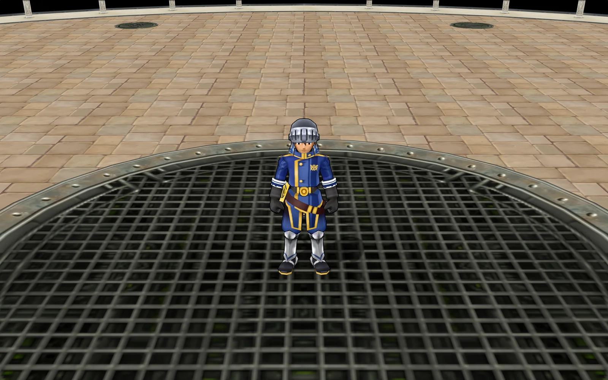
How a battle works
Battlefields
The lobbies lead to these battlefields. The pins show where each faction arrives. In Transport, each faction's delivery area is close to its pin. The data has no Emblem positions.


Rules
Each Knight Training uses one of three rules:
- Transport: each faction has its own delivery area. Deliveries earn Delivery Points.
- Leader Battle: each faction has a leader. Everyone sees a message when a faction loses its leader.
- General: a faction can get a timed buff:
- Decrease Return Time
- Increase Hero Points
- Protect Emblem Points
- Increase Destroy Emblem Points
- Increase Delivery Points
- All Points Increased
- Increase Return Time for another faction
Scoring
- The faction with the most points at the end ranks 1st.
- Defeating a player of another faction scores 2 points.
- Each faction has an Emblem on the battlefield. Destroying another faction's Emblem earns points, and your side loses points when its own Emblem is destroyed.
- In Transport, delivering to your side's delivery area earns points.
- The General rule's buffs mention Hero Points. What earns them is not known.
-
Crystals appear during the battle. Destroying one scores points:
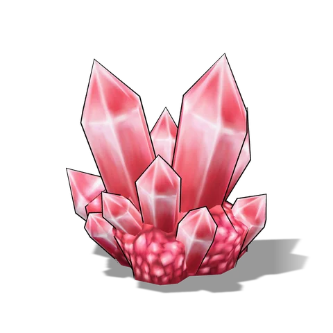
Garnet1 point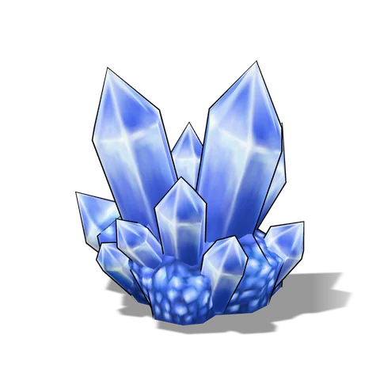
Aquamarine3 points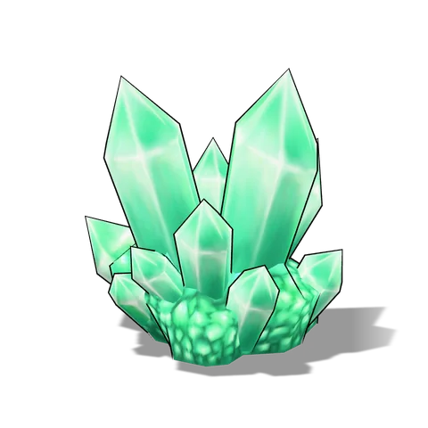
Emerald5 points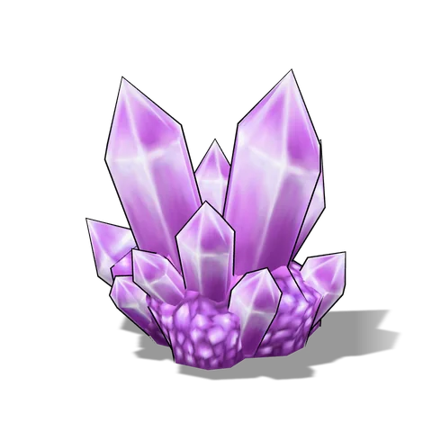
Tourmaline50 points -
Whoever destroys the Tourmaline becomes a Hero and scores double. If the Hero dies, it passes to whoever defeated them. If the Hero logs out, it passes to players nearby.
- When the factions have different numbers of players, a handicap applies:
- Special items are easier to get
- The score is multiplied
- You can't possess a player of another faction.
- Some skills can't be used in Knight Training. The skill's info lists the rules where it is not allowed.
- Some skills work differently against players: see PvP Skill Changes.
Points and rewards
- When the battle ends, the Knight Training Results window shows your EXP and Job EXP, Score Bonus, Award Bonus, Total and CP gained.
- Everyone who took part gets EXP. The amount depends on:
- How many players took part
- Your side's rank
- How many players your side has
- Your own score
- Any awards you won
- CP is the same CP you spend at the CP shops.
- Taking part, placing 1st and winning the Nightingale award also earn titles.
Awards
The best player in each category wins an award:
| Award | Counted by |
|---|---|
| Booby of the Death | Deaths |
| Nightingale | Recovery |
| Collector | Items delivered |
| Shield of Shield | Hide and Seek |
| Rampage | Players |
| Superman | Most damage taken in one life |
| Transport Expert | Shipments |
| Bomber | Bombing |
| Garbage Carrier | Shipments |
| Goodluck | Time |
| Killer | Players defeated |
Rank Board
The Knight Training Rank Board in Downtown shows the top 10 players.